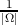

Figure 1: The faces of Mount Rushmore—Public Domain
Winston Ewert, William A. Dembski, and Robert J. Marks II
Baylor University
Discovery Institute
Abstract
Engineers like to think that they produce something different from that of a chaotic system. The Eiffel tower is fundamentally different from the same components lying in a heap on the ground. Mt. Rushmore is fundamentally different from a random mountainside. But engineers lack a good method for quantifying this idea. This has led some to reject the idea that engineered or designed systems can be detected. Various methods have been proposed, each of which has various faults. Some have trouble distinguishing noise from data, some are subjective, etc. For this study, conditional Kolmogorov complexity is used to measure the degree of specification of an object. The Kolmogorov complexity of an object is the length of the shortest computer program required to describe that object. Conditional Kolmogorov complexity is Kolmogorov complexity with access to a context. The program can extract information from the context in a variety of ways allowing more compression. The more compressible an object is, the greater the evidence that the object is specified. Random noise is incompressible, and so compression indicates that the object is not simply random noise. This model is intended to launch further dialog on use of conditional Kolmogorov complexity in the measurement of specified complexity.
Intuitively, humans identify objects such as the carved faces at Mount Rushmore as qualitatively different from that of a random mountainside. However, quantifying this concept in an objective manner has proved difficult. Both mountainsides are made up of the same material components. They are both subject to the same physical forces and will react the same to almost all physical tests. Yet, there does appear to be something quite different about Mount Rushmore. There is a special something about carved faces that separates it from the rock it is carved in.
This “special something” is information. Information is what distinguishes an empty hard disk from a full one. Information is the difference between random scribbling and carefully printed prose. Information is the difference between car parts strewn over a lawn and a working truck.
While humans operate using an intuitive concept of information, attempts to develop a theory of information have thus far fallen short of the intuitive concept. Claude Shannon developed what its today known as Shannon information theory (Shannon et al., 1950). Shannon’s concern was studying the problem of communication, that of sending information from one point to another. However, Shannon explicitly avoided the question of the meaningfulness of the information being transmitted, thus not quite capturing the concept of information as defined in this paper. In fact, under Shannon’s model a random signal has the highest amount of information, the precise opposite of the intuitive concept.
Another model of information is that of algorithmic information theory (Chaitin, 1966; Solomonoff, 1960; Kolmogorov, 1968b). Techniques such as Kolmogorov complexity measure the complexity of an object as the minimum length computer program required to recreate the object; Chaitin refers to such minimum length programs as elegant (Chaitin, 2002). As with Shannon information, random noise is the most complex because it requires a long computer program to describe. In contrast, simple patterns are not complex because a short computer program can describe the pattern. But neither simple patterns nor random noise are considered conceptual information. As with Shannon information, there is a disconnect between Kolmogorov complexity and conceptual information.
Other models are based on algorithmic information theory, but also take into account the computational resources required for the programs being run. Levin complexity adds the log of the execution time to the complexity of the problem (Levin, 1976). Logical depth, on the other hand, is concerned with the execution time of the shortest program (Bennett, 1988). There is a class of objects which are easy to describe but expensive to actually produce. It is argued (Bennett, 1988) that objects in this class must have been produced over a long history. Such objects are interesting, but do not seem to capture the intuitive concept of information in its entirety. English text or Mount Rushmore correspond to what is usually considered as information, but it is not clear that they can be most efficiently described as long running programs.
One approach to information is specified complexity as expressed by Dembski (Dembski, 1998). Dembski’s concern is that of detecting design, the separation of that which can be explained by chance or necessity from that which is the product of intelligence. In order to infer design, an object must be both complex and specified. Complexity refers, essentially, to improbability. The probability of any given object depends on the chance hypothesis proposed to explain it. Improbability is a necessary but not sufficient condition for rejecting a chance hypothesis. Events which have a high probability under a given chance hypothesis do not give a reason to reject that hypothesis.
Specification is defined as conforming to an independently given pattern. The requirement for the pattern to be independent of the object being investigated is fundamental. Given absolute freedom of pattern selection, any object can be made to seem specified by selecting that object as the pattern. It is not impressive to hit a bullseye if the bullseye is painted on after the arrow has hit the wall. It is impressive to hit the bullseye if the bullseye was painted before the arrow was fired.
Investigators are often not able to choose the target prior to investigating the object. For example, life is a self-replicating process, and it would seem that an appropriate specification would be self-replication. Self-replication is what makes life such a fascinating area of investigation as compared to rocks. Human beings know about self-replication because of their knowledge of life, not as an independent fact. Therefore, it does not qualify as an independent specification.
The same is true of almost any specification in biology. It is tempting to consider flight a specification, but the pattern of flight would only be defined because flying animals have been observed. As with life in general, specific features in biology cannot be specified independently of the objects themselves.
The concept of specification has been criticized for being imprecisely defined and unquantifiable. It has also been charged that maintaining the independence of the patterns is difficult. But specification has been defined in a mathematically rigorous manner in several different ways (Dembski, 1998, 2002, 2005). Kolmogorov complexity, or a similar concept, is a persistent method used in these definitions. The goal of this paper is to present and defend a simple measure of specification that clearly alleviates these concerns. Towards this end, the authors propose to use conditional Kolmogorov complexity to quantify the degree of specification in an object. Conditional Kolmogorov complexity can then be combined with complexity as a measurement of specified complexity. This approach to measuring specified complexity is called algorithmic specified complexity.
As noted, Kolmogorov complexity has been suggested as a method for measuring specification. The novelty in the method presented here is the use of conditional Kolmogorov complexity. However, this paper also elucidates a number of examples of algorithmic compressibility demonstrating wider applicability than is often realized.
Kolmogorov complexity is a method of measuring information. It is defined as the minimum length computer program, in bits, required to produce a binary string.
|
| (1) |
where
The definition is given for producing binary strings.
Kolmogorov complexity measures the degree to which a given bitstring follows a pattern. The more a bitstring follows a pattern, the shorter the program required to reproduce it. In contrast, if a bitstring exhibits no patterns, it is simply random, and a much longer program will be required to produce it.
Consider the example of a random binary string, 100100000010100000001010. It can be produced by the following Python program:
In contrast, the string 000000000000000000000000 can be produced by
Both strings are of the same length, but the string following a pattern requires a shorter program to produce; thus, a technique exists for measuring the degree to which a binary string follows a pattern.
Specification is defined as following an independently given pattern. Kolmogorov complexity provides the ability to precisely define and quantify the degree to which a binary string follows a pattern. Therefore, it seems plausible that a specification can be measured using Kolmogorov complexity. The more compressible a bitstring, the more specified it is.
However, Kolmogorov complexity seems unable to capture the entirety of what is intended by specification. Natural language text is not reducible to a simple pattern; however, it is an example of specification. The design of an electronic circuit should also be specified, but it is not reducible to a simple pattern. In fact, the cases of specification that Kolmogorov complexity seems able to capture are limited to objects which exhibit some very simple pattern. But these are not the objects of most interest in terms of specification.
There is also an extension of Kolmogorov complexity known as conditional Kolmogorov complexity which can be used (Kolmogorov, 1968a). With conditional Kolmogorov complexity, the program now has access to additional data as its input.
|
| (2) |
where U(p,Y ) is the output of running program p with input Y .
In this calculation, the input provides additional data to the program. As a result, the program is no longer restricted to exploiting patterns in the desired output but can take advantage of the information provided by the input. Henceforth, this input is referred to as the context.
The use of context allows the measure to capture a broader range of specifications. It is possible to describe many bitstrings by combining a short program along with the contextual information. A useful range of specifications can be captured using this technique.
The following formula for algorithmic specified complexity (ASC) combines the measurement of specification and complexity.
|
| (3) |
where
Since high compressibility corresponds to specification, the compressed length of the string is subtracted. Thus, high improbability counts for specified complexity, but incompressible strings count against it.
For this number to become large requires X to be both complex (i.e., improbable) and specified (i.e., compressible). Failing on either of these counts will produce a low or negative value. Since Kolmogorov complexity can, at best, be upper bounded, the ASC can, at best, be lower bounded.
At best this measure can reject a given probability distribution. It makes no attempt to rule out chance-based hypotheses in general. However, it can conclude that a given probability distribution does a poor job in explaining a particular item. The value of ASC gives a measure of the confidence available for rejecting a chance hypothesis.
Perhaps the most interesting form of specification is that of functionality. It is clear that machines, biological structures, and buildings all have functionality, but quantifying that functionality in an objective manner has proven difficult. However, ASC provides the ability to do this.
Any machine can be described in part by tests that it will pass: The functionality of a car can be tested by seeing whether it accelerates when the gas or brake pedals are pushed; the functionality of a cell by seeing whether it self-replicates. A test, or a number of tests, can be defined to identify the functionality of an object. The existence of a test supplies the ability to compress the object. Consider the following pseudocode program.
This program will output the design for a specific building based on a given value for X. Different values of X will produce different buildings. But any building that will not fall over can be expressed by this program. It may take a considerable amount of space to encode this number. However, if few designs are stable, the number will take much less space than what would be required to actually specify the building plans. Thus, the stability of the building plan enables compression, which in turn indicates specification.
Kolmogorov complexity is not limited to exploiting what humans perceive as simple patterns. It can also capture other aspects such as functionality. Functionality can be described as passing a test. As a result, functional objects are compressible.
Consider the sentence: “The quick brown fox jumps over the lazy dog.” This sentence can be encoded as UTF-32, a system for encoding that allows the encoding of symbols from almost any alphabet. Since each character takes 32 bits, the message will be encoded as a total of 1,376 bits. In this example, the context will be taken to be the English alphabet along with a space. This is a minimal level of information about the English language.
To specify one of the 27 characters requires log 227 bits. To specify the 43 characters in the sentence will thus take 43 log 227 bits. The number of characters are recorded at 2 log 243 ≈ 10.85 bits.1 Altogether, the specification of the message requires 43 log 227 + 2 log 243 ≈ 215.32 bits.
However, in order to actually give a bound for Kolmogorov complexity, the length of the computer program which interprets the bits must also be included. Here is an example computer program in Python which could interpret the message
This assumes that the alphabet and encoded message are readily available and in a form amenable to processing within the language. It may be that the input has to be preprocessed, which would make the program longer. Additionally, the length of the program will vary heavily depending on which programming language is used. However, the distances between different computers and languages only differ by a constant (Cover & Thomas, 2006). As a result, it is common practice in algorithmic information theory to discount any actual program length and merely include that length as a constant, c. Consequently, the conditional Kolmogorov complexity can be expressed as
|
| (4) |
The expression is less than rather than equal to because it is possible that an even more efficient way of expressing the sentence exists. However, at least this efficiency is possible.
The encoded version of the sentence requires 32 bits for each character, giving a total of 1,376 bits. Using a simplistic probability model, supposing that each bit is generated by the equivalent of a coin flip, the complexity, - log P(X), would be 1376 bits. Using equation 3,
|
| (5) |
This shows 1,166 bits of algorithmic specified complexity by equation 3. Those 1166 bits are a measure of the confidence in rejecting the hypothesis that the sentence was generated by random coin flips. The large number of bits gives a good indication that it is highly unlikely that this sentence was generated by randomly choosing bits.
The hypothesis that the sentence was generated by choosing random English letters can also be analyzed. In this case the probability of this sentence can be calculated as
|
| (6) |
The complexity is then
|
| (7) |
in which case the algorithmic specified complexity becomes
|
| (8) |
The negative bound suggests no reason to suppose that this sentence could not have been generated by a random choice of English letters. The bound is negative as a result of two factors. In the specification, 10.85 bits were required to encode the length. On the other hand, the probability model assumes a length. Hence, the negative bits indicate information which the probability model had, but was not provided in the context. Since the only provided context is that of English letters, this is not a surprising result. No pattern beyond that explained by the probability model is identified.
The context can also be expanded. Instead of providing the English alphabet as the context, the word list of the Oxford English Dictionary can be used (OED Online, 2012). In the second edition of that dictionary there were 615,100 word forms defined or illustrated. For the purpose of the alphabet context, each letter is encoded as a number corresponding to that character. In this case, a number corresponding to words in the dictionary is chosen. Thus the number of bits required to encode the message using this context can be calculated:
|
| (9) |
Access to the context of the English dictionary allows much better compression than simply the English alphabet as comparing equations 4 and 9 shows.
Using equation 3 yields
|
| (10) |
This provides confidence to say this sentence was not generated by randomly choosing letters from the English alphabet.
It is possible to adopt a probability model that selected random words from the English language. Such a probability model would explain all of the specification in the sentence. It is also possible to include more information about the English language such that the specification would increase.
This technique depends on the fact that the numbers of words in the English language is much smaller then the number of possible combinations of letters. If the dictionary contained every possible combination of letters up to some finite length, it would not allow compression, and thus be of no help to finding evidence of specification. A language where all possible combinations of letters were valid words could still show specification, but another technique would have to be used to allow compression.
But one could also use a much smaller dictionary. A dictionary of 10 words would be sufficient to include all the words in this sentence. The ASC formula would give a much smaller compressed bound:
|
| (11) |
This is a reduction of over 100 bits from equation 9. Because the sentence is much more closely related to the context, it takes about 16 bits less to encode each word when the dictionary is this small. In other words, it requires much less additional information to use the context when it is closely related to the message.
But it is possible to include words not included in the dictionary. The program would have to fall back on spelling the word one letter at a time. Only the bounds of the ASC can be computed. It is always possible a better compression exists, i.e., the object could be more specified than first realized.
While natural language is an example of something that should be specified, random noise is an example of something which should not. Consider a random bitstring containing 1,000 bits, where each bit is assigned with equal probability 1 or 0. Since randomness is incompressible, calculating the Kolmogorov complexity is easy. The only way of reproducing a random bitstring is to describe the whole bitstring.
|
| (12) |
The probability of each bitstring is 2-1000, and thus the complexity will be 1000 bits. Calculating the ASC:
|
| (13) |
As expected, the ASC is negative, and there is therefore no evidence of patterns in the string that are not explained by the probability model.
However, consider also the case of a biased distribution. That is, 1 and 0 are not equally likely. Instead, a given bit will be 1 two thirds of the time, while 0 only one third of the time. The entropy of each bit can be expressed as
|
| (14) |
for any i. The entropy of a bit is the number of bits required in an optimal encoding to encode each bit. This means the whole sequence can be described as
|
| (15) |
Using the uniform probability model, the complexity is still 1,000 bits and
|
| (16) |
This random sequence has a high bound of algorithmic specified complexity. It is important to remember that the ASC bound only serves to measure the plausibility of the random model. It does not exclude the existence of another more accurate model that explains the data. In this case, using the actual probability model used to generate the message yields
|
| (17) |
and the resulting ASC:
|
| (18) |
The bound of ASC provides reason to reject a uniform noise explanation for this data, but not the biased coin distribution.
Dembski (Dembski, 1998) has considered the example of ballot rigging where a political party is almost always given the top billing on the ballot listing candidates. Since the selection is supposed to be chosen on the basis of a fair coin toss, this is suspicious. ASC can quantify this situation. The outcome can be described by giving the numbers of heads and tails, followed by the same representation as for the biased coin distribution.
|
| (19) |
where Xh is the number of heads, Xt is the number of tails Assuming a probability model of a fair coin yields
|
| (20) |
This results in the following:
| A(X,C,p) | = Xh + Xt - 2 log Xh - 2 log Xt - log ( Xt + Xh Xh ) - c | ||
| = Xh + Xt - log - c. | (21) |
Figure 6 shows the result of plotting this equation for varying numbers of head and tails given 20 coin tosses. As expected, for either high numbers of tails or high number of heads, the bound of ASC is high. However, for an instance which looks like a random sequence, the ASC is minimized.
Another pertinent case is that of playing cards in poker. In playing cards, if the distribution is not uniform, somebody is likely cheating. For the purpose of investigating card hands, a uniform random distribution over all five-card poker hands is assumed.
| Name | Frequency |
| Royal Flush | 4 |
| Straight Flush | 36 |
| Four of a Kind | 624 |
| Full House | 3,744 |
| Flush | 5,108 |
| Straight | 10,200 |
| Three of a Kind | 54,912 |
| Two Pair | 123,552 |
| One Pair | 1,098,240 |
| None | 1,302,540 |
In the game of poker, a poker hand is made up of 5 cards. Some categories of hands are rarer then others. Table 1 shows the frequency of the different hands.
Given a uniform distribution, every poker hand has the same probability and thus the same complexity. There are 2,598,960 possible poker hands. For a single hand, this yields a complexity of
|
| (22) |
While the probability of every poker hand is the same, the Kolmogorov complexity is not. To describe a royal flush requires specifying that it is a royal flush and which suit it is in. However, describing a pair requires specifying the paired value as well as both suits in addition to the three cards not involved in the pair. In general, describing a hand requires specifying the type of hand and which particular hand of all the possible hands of that type. This can be used to calculate the conditional Kolmogorov complexity for the hand.
 | (23) |
where 10 is the number of types of hands. H is the set of all hands of a particular type, and Hi is a particular hand in that set.
There are 1,098,240 possible pairs. Putting this in Equation 23 gives:
|
| (24) |
On the other hand, describing a pair without using the context gives
|
| (25) |
Single pairs are so common that the space required to record that it was a pair is more than the space required to record the duplicate card straightforwardly. Accordingly, the best approach is to take the minimum of the two methods
|
| (26) |
| Name | Frequency | Complexity | Compressed Length | ASC |
| Royal Flush | 4 | 21.310 | 5.322 | 15.988 |
| Straight Flush | 36 | 21.310 | 8.492 | 12.818 |
| Four of a Kind | 624 | 21.310 | 12.607 | 8.702 |
| Full House | 3,744 | 21.310 | 15.192 | 6.117 |
| Flush | 5,108 | 21.310 | 15.640 | 5.669 |
| Straight | 10,200 | 21.310 | 16.638 | 4.671 |
| Three of a Kind | 54,912 | 21.310 | 19.067 | 2.243 |
| Two pair | 123,552 | 21.310 | 20.237 | 1.073 |
| One pair | 1,098,240 | 21.310 | 21.310 | 0.000 |
| None | 1,302,540 | 21.310 | 21.310 | 0.000 |
Table 2 shows the ASC for the various poker hands. Rare hands have high ASC, but common hands have low ASC. This parallels expectations, because with a rare hand one might suspect cheating, but with a common hand one will not.
In other card games, a card is turned over after hands have been dealt to determine trump. The suit of the card is taken to trump for that round of the game. If the same suit is repeatedly chosen as trump, someone may ask what the odds are for that to occur. This question can be difficult to answer because every possible sequence of trump suits is equally likely. Yet, it is deemed unusual that the same suit is a trump repeatedly. Algorithmic specified complexity allows this to be modeled.
The suits are represented as a bit sequence using two bits for each suit,
|
| (27) |
where 4 is the number of suits, and H is the number of hands played. The complexity of the sequence is
|
| (28) |
The ASC is then
|
| (29) |
Note that this equation becomes -c when H = 1. A pattern repeating once is no pattern at all and does not provide specification.
Figure 7 shows the ASC for increasing numbers of hands. The more times the same suit is chosen as trump, the larger the number of bits of ASC. The same trump for many rounds becomes less and less probable.
In biology, an important prerequisite to a protein being functional is that it folds. The fraction of all possible protein sequences that fold has been estimated: “the overall prevalence of sequences performing a specific function by any domain-sized fold may be as low as 1 in 1077” (Axe, 2004).
A program can be created which uses the laws of physics to output a particular foldable protein.
Given different choices of L and N, this program will output any particular folding protein. This means that the protein can be described by providing those two numbers. Thus, the conditional Kolmogorov complexity can be calculated using these two numbers.
|
| (30) |
where C is the context, in this case the law of physics, and FL is the number of folding proteins of length L. Taking Axe’s estimate (Axe, 2004), and assuming simplistically that it applies for all lengths of proteins,
|
| (31) |
|
| (32) |
therefore
|
| (33) |
The probability model will be chosen by supposing that each base along the DNA chain for the gene encoding the protein is uniformly chosen. It should be emphasized that according to the Darwinian model of evolution, the bases are not uniformly chosen. This supposition only serves to test a simplistic chance model of protein origin. The probability can be calculated as
|
| (34) |
Caution should be used in applying this formula. It assumes that the proportion of functional proteins is applicable for all lengths and implies that a fractional number of proteins fold.
Finally calculating the ASC,
| ASC(X,p) | = L log 4 - 2 log 2L + 77 log 210 - L log 24 - c | ||
| = -2 log 2L + 77 log 210 - c. | (35) |
Kirk Durston et al. have defined the idea of functional sequence complexity (Durston, Chiu, Abel, & Trevors, 2007). Functional sequence complexity is related to a special case of algorithmic specified complexity.
A protein is made from a sequence of amino acids. Some sequences have functionality, and some do not. The case considered in section 3.4 above of folding is one particular case. Perhaps more interesting is considering the case of various proteins which perform useful biological functions.
Let Ω be the set of all proteins. Let F be the set of all proteins which pass a functionality test. Let f(x) be a probability distribution over F. Both F and f(x) can be produced by a simple algorithm using a functionality test on each element of Ω. Consequently, F and f(x) can be described using a constant program length.
Consider the average for ASC over all elements in F.
| ∑ x∈F f(x)A(x,C,p) | = ∑ x∈F f(x)(- log p(x) - K(x|C)) | ||
| = ∑ x∈F - f(x) log p(x) -∑ x∈F f(x)K(x|C)) | (36) |
Any element x can be described given the probability distribution and log f(x) bits. Given that f(x) and F can be calculated with a constant program, the conditional Kolmogorov complexity can be calculated as
|
| (37) |
Place this into equation 36.
|
| (38) |
The middle term is recognized as the Shannon entropy.
 | (39) |
If the distribution p is uniform, p(x) = ,
|
| (40) |
The two summations over F are summations over a probability distribution and therefore 1.
|
| (41) |
Equation 5 in Durston’s work, adjusting for notation is
|
| (42) |
This equation derives from making the same uniformity assumption made above. Thus, for the uniform probability distribution case,
|
| (43) |
This establishes the relationship between ASC and FSC. The difference is that the ASC is a lower bound and includes a constant. This is the same constant as elsewhere: the length of the program required to describe the specification.
It has been argued in this paper that compressibility in the presence of context is a necessary condition for information. This is in contrast to others who have argued that lack of compressibility is a necessary condition for information (Abel & Trevors, 2005). But compressible objects lack complexity. Because a compressible object is describable as some simple pattern, it is amenable to being produced by a simple process. Many objects in the real world follow simple patterns. Water tends to collect at lower elevations. Beaches follow a sloping pattern. Sparks fly upwards. But these patterns are the result of the operation of simple law-like processes. Even if the explanations for these patterns were unknown, the simplicity of the pattern suggests that some simple explanation existed.
The premise behind this use of compressibility is that it identifies what human would see as simple patterns. Abel writes: “A sequence is compressible because it contains redundant order and patterns” (Abel & Trevors, 2005).
The problem is that algorithms are very versatile and allow the description of many patterns beyond that which humans would see as patterns. As has been shown by the various examples in this paper, many objects which do not exhibit what humans typically identify as redundant order and patterns are in fact compressible. Significantly, functionality actually allows compressibility. Contrary to what Abel states, functional sequences are compressible by virtue of the functionality they exhibit. All of the sequences that Abel holds to be mostly incompressible are actually compressible.
But are compressible objects amenable to explanation by simple processes? Do all compressible objects lack complexity? If this were true, it would be problematic for algorithmic specified complexity because all specified objects would also not be complex, and no object would ever be both specified and complex. But many compressible objects do not appear amenable to explanation by a simple process.
As discussed, English text is compressible given a knowledge of the English language. This does not somehow make it probable that English text will appear on a beach carved out by waves. Ninety degree angles are very compressible; yet, they are not typically found in nature. The existence of an explanation from the laws of nature does not appear to follow from compressibility.
Kolmogorov complexity deliberately ignores how long a program takes to run. It is only concerned with the length of the program’s description. A program may be short but take an astronomical amount of time to run. Many of the specifications considered in this paper fall into that category. These objects are compressible, but that compression does not give a practical way to reproduce the object. But if there is no practical way to reproduce the object, there is no reason to suggest law-like processes as a plausible explanation.
The ASC of any object will depend on the context chosen. Any object can be made to have high ASC by using a specifically chosen context. But this appears to be the way that information works. If the authors, who do not understand Arabic, look at Arabic text, it appears to be no better then scribbling. The problem is not that Arabic lacks information content, but that the reader is unable to identify it without the necessary context. As a result, this subjectivity appears to capture something about the way information works in the human experience.
As with specification, it is important that the context be chosen that is independent of the object under investigation. While a specification will rarely be independent of the object under investigation, it is much easier to maintain this independence in the case of a context.
It is not possible to calculate the Kolmogorov complexity of an object. However, it is possible to upper-bound the Kolmogorov complexity and thus lower-bound the algorithmic specified complexity. This means that something can be determined to be at least this specified, although the possibility that it is even more specified cannot be ruled out. Therefore, even though detecting a specification cannot be achieved mechanically, it can be objectively identified when found.
The approach of using compressibility as a measurement of specification was suggested to the authors by Eric Holloway. The authors have attempted to extend the approach to apply to many more types of specifications. The authors are grateful for his initial suggestion and answer to our initial objections to the idea.
1A more compact representation for numbers is available. See the log* method in Cover & Thomas (2006).
Abel, D. L. & Trevors, J. T. (2005). Three subsets of sequence complexity and their relevance to biopolymeric information. Theoretical Biology & Medical Modelling, 2, 29. Available from http://www.pubmedcentral.nih.gov/articlerender.fcgi?artid=1208958&tool=pmcentrez&rendertype=abstract, doi:10.1186/1742-4682-2-29
Axe, D. D. (2004). Estimating the prevalence of protein sequences adopting functional enzyme folds. Journal of Molecular Biology, 341(5), 1295–315. Available from http://www.ncbi.nlm.nih.gov/pubmed/15321723, doi:10.1016/j.jmb.2004.06.058
Bennett, C. H. (1988). Logical depth and physical complexity. In The universal turing machine: A half-century survey (pp. 227–257). Available from http://www.springerlink.com/index/HRG11848P291274Q.pdf
Chaitin, G. J. (1966). On the length of programs for computing finite binary sequences. Journal of the ACM (JACM), 13. Available from http://dl.acm.org/citation.cfm?id=321363
Chaitin, G. J. (2002). Conversations with a mathematician: Math, art, science, and the limits of reason: A collection of his most wide-ranging and non-technical lectures and interviews. New York: Springer.
Cover, T. M. & Thomas, J. A. (2006). Elements of information theory. Hoboken, NJ: Wiley-Interscience, second edition.
Dembski, W. A. (1998). The design inference: Eliminating chance through small probabilities. Cambridge University Press. Available from http://mind.oxfordjournals.org, doi:10.1093/mind/112.447.521
Dembski, W. A. (2002). No free lunch: Why specified complexity cannot be purchased without intelligence. Lanham MD: Rowman & Littlefield. Available from http://www.worldcat.org/title/no-free-lunch-why-specified-complexity-cannot-be-purchased-without-intelligence/oclc/46858256&referer=brief_results
Dembski, W. A. (2005). Specification: The pattern that signifies intelligence. Philosophia Christi, 7(2), 299–343. Available from http://www.lastseminary.com/specified-complexity/Specification-ThePatternThatSignifiesIntelligence.pdf
Durston, K. K., Chiu, D. K. Y., Abel, D. L., & Trevors, J. T. (2007). Measuring the functional sequence complexity of proteins. Theoretical Biology & Medical Modelling, 4, 47. doi:10.1186/1742-4682-4-47
Kolmogorov, A. N. (1968a). Logical basis for information theory and probability theory. IEEE Transactions on Information Theory, 14(5), 662–664. Available from http://ieeexplore.ieee.org/lpdocs/epic03/wrapper.htm?arnumber=1054210, doi:10.1109/TIT.1968.1054210
Kolmogorov, A. N. (1968b). Three approaches to the quantitative definition of information. International Journal of Computer Mathematics. Available from http://www.tandfonline.com/doi/abs/10.1080/00207166808803030
Levin, L. A. (1976). Various measures of complexity for finite objects. (axiomatic description). Soviet Math, 17(522).
OED Online (2012). Oxford English dictionary online. Available from http://dictionary.oed.com
Shannon, C. E., Weaver, W., & Wiener, N. (1950). The mathematical theory of communication. Physics Today, 3(9), 31. Available from http://www.ncbi.nlm.nih.gov/pubmed/9230594, doi:10.1063/1.3067010
Solomonoff, R. J. (1960). A preliminary report on a general theory of inductive inference. Technical report, Zator Co. and Air Force Office of Scientific Research, Cambridge, Mass. Available from http://citeseerx.ist.psu.edu/viewdoc/download?doi=10.1.1.66.3038&rep=rep1&type=pdf, doi:10.1.1.66.3038